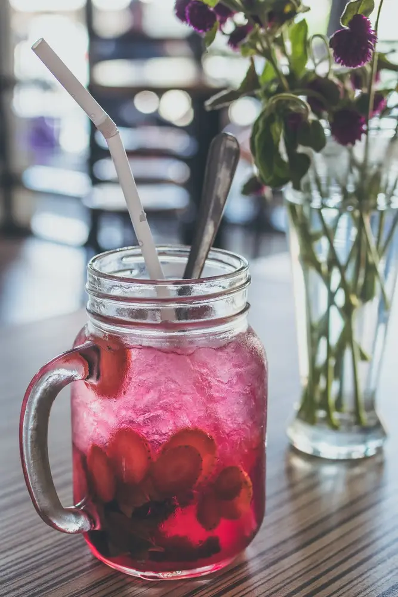

Articles / Tips & trends
Drink safely with preservatives-free syrups!
2021-04-22 · New products, News

As the hot summer arrives, the sight of a glass of freshly-made iced fruit tea is certainly a welcome sight. From the colourful juices to the sliced fruits floating in the mixture, these fruit teas look extra enticing!
However, have you really thought about what goes into those drinks?
Fruit syrups are often a quick and convenient way to lend a drink a strong fruity taste, but many of those (especially cheaper variants) are nothing more than a mixture of water, sugar and various chemicals, with barely any natural ingredients. Preservatives may also be added to the syrups to extend their shelf life.
What can you do?

Why not try out our preservatives-free syrups?
As the name suggests, these syrups do not contain any preservatives. Instead, they rely on their sweetness, acidity and low water activity to prevent bacterial growth.
While these syrups may not have a shelf life as long as regular syrups’, they’re a great choice for those who are wary about preservatives in their foods.
Some countries may also have limits on the amount of preservatives used in foods, but you need not worry by using these syrups!
Want to go a step further with healthiness? We can even make calorie-free variants with no sugars added!
Want to learn more about this syrup range?